Encontre as informações de que precisa em um só lugar.
Painéis Públicos
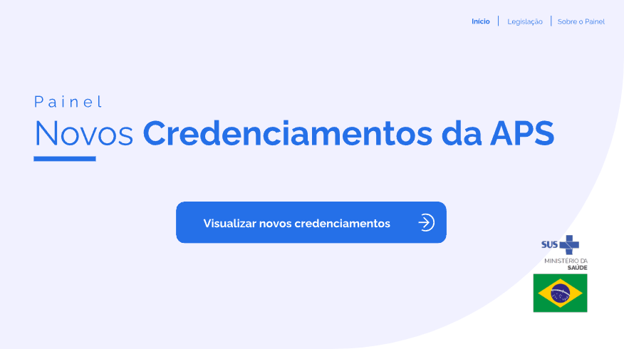
Painel dos Credenciamentos da APS
PúblicoDisponibiliza informações sobre prazos de credenciamento, com o objetivo de orientar os municípios e apoiar a implantação oportuna.
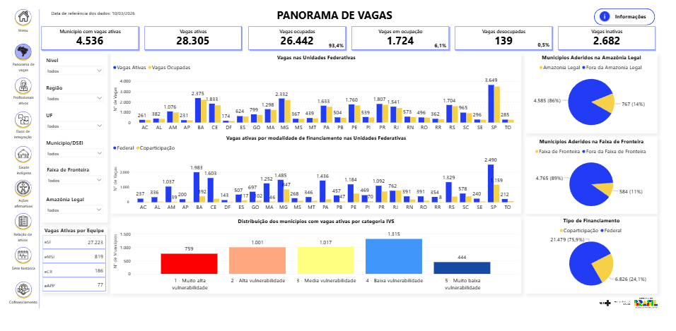
Painel Mais Médicos
PúblicoFerramenta interativa e transparente do Ministério da Saúde voltada para o monitoramento e a gestão do Programa Mais Médicos.
Painéis Internos
Financiamento
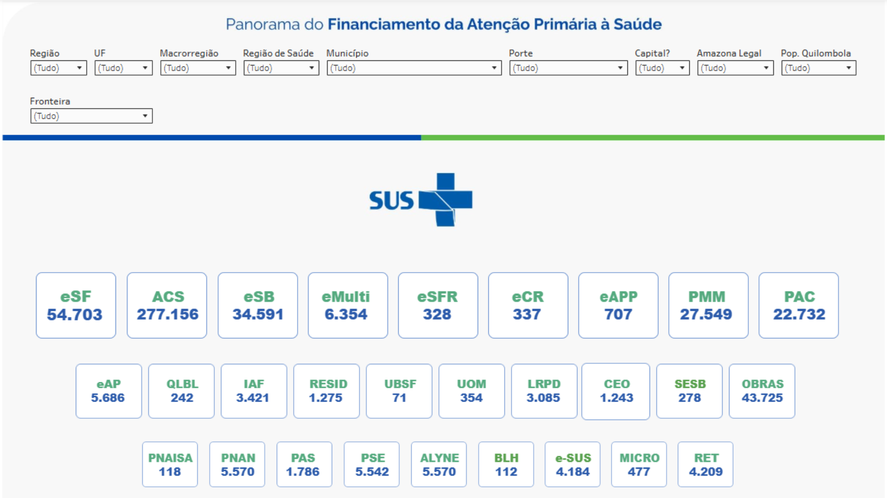
Painel Panorama APS
InternoApresenta um retrato abrangente da situação do município, com informações estratégicas sobre estrutura, indicadores e financiamento da APS.
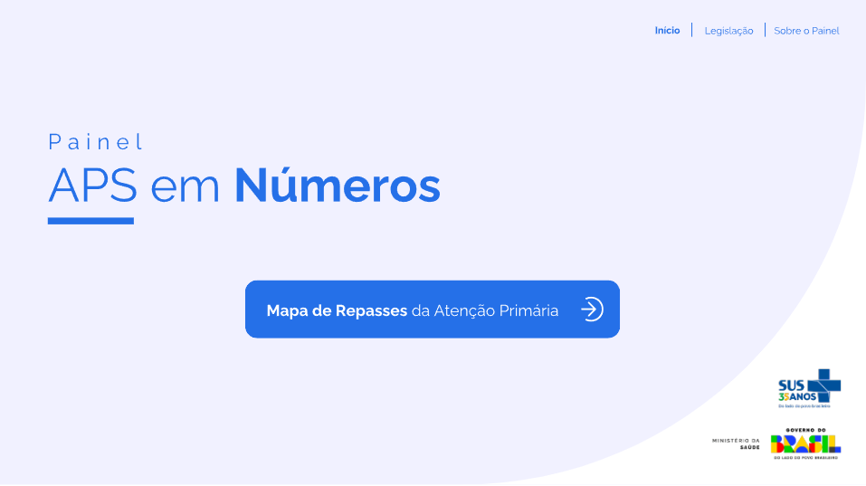
APS em Números
InternoPainel com indicadores consolidados da Atenção Primária à Saúde para apoio à gestão e à tomada de decisão.
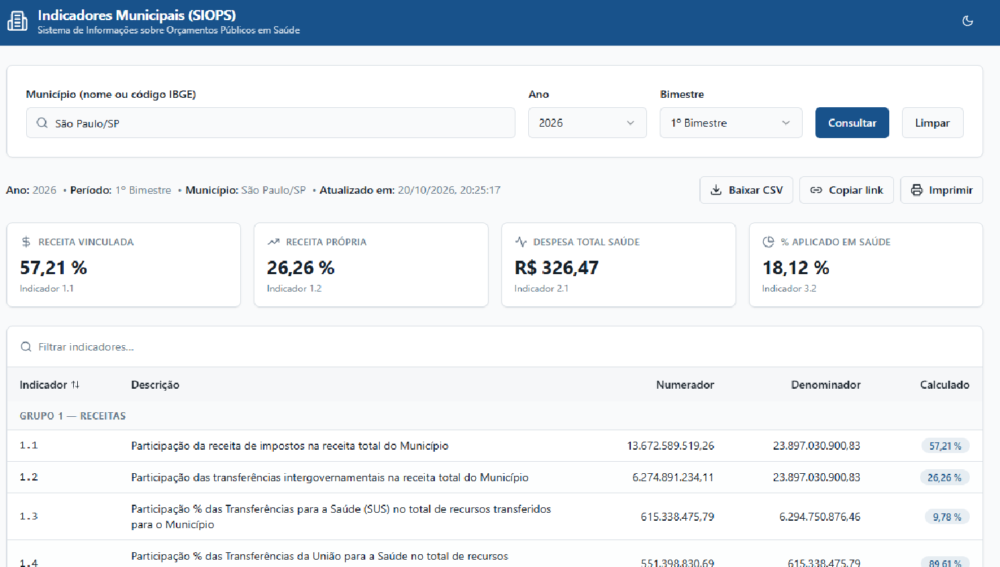
SIOPS
InternoPainel interativo com nova experiência de consulta dos indicadores municipais do SIOPS.
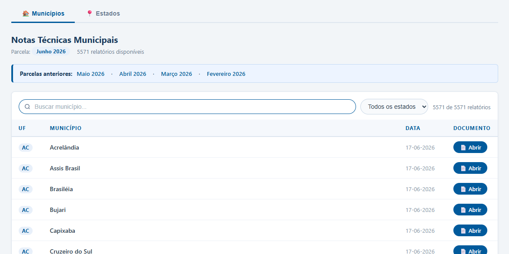
Notas Técnicas
InternoReúne dados detalhados e organizados para subsidiar respostas rápidas, consistentes e tecnicamente qualificadas às demandas de informação.
Censo Nacional das UBS
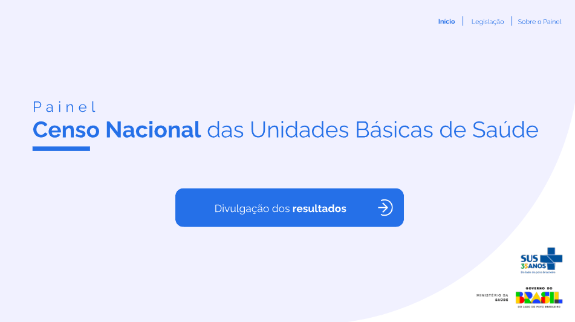
Censo Nacional das UBS
InternoResultados do Censo Nacional das UBS, com informações que subsidiam análises, debates internos e reflexões sobre a qualificação da gestão.
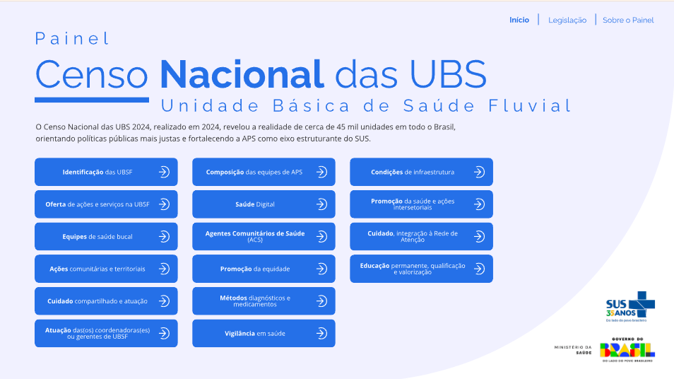
Censo das UBS — Fluvial
InternoInformações específicas sobre as UBS Fluviais, permitindo análises direcionadas às singularidades da atenção à saúde em contextos fluviais.
Combo de equipamentos
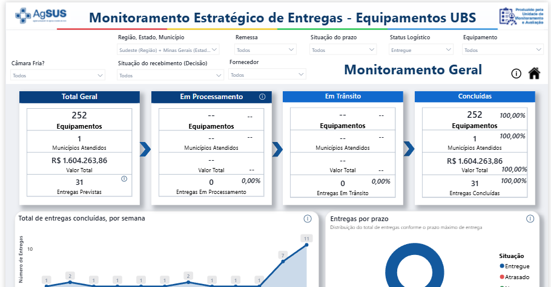
Painel de Monitoramento de Entregas dos Combos AgSUS
InternoDistribuição dos equipamentos por município, ampliando a transparência da ação e apoiando o acompanhamento da entrega dos combos para UBS.
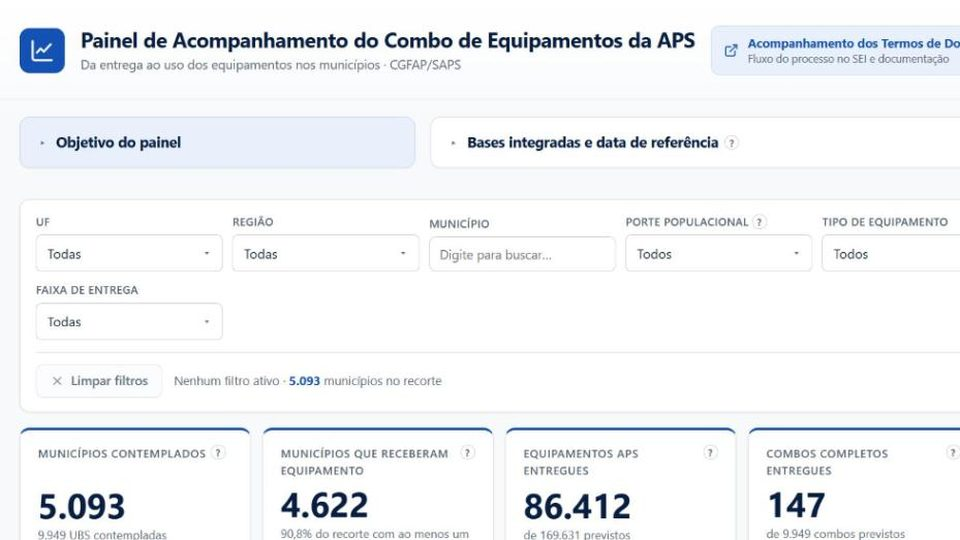
Painel de Acompanhamento do Combo de Equipamentos da APS
InternoAcompanhamento das entregas do combo de equipamentos da APS e do fluxo dos termos de doação.
Cobertura da APS
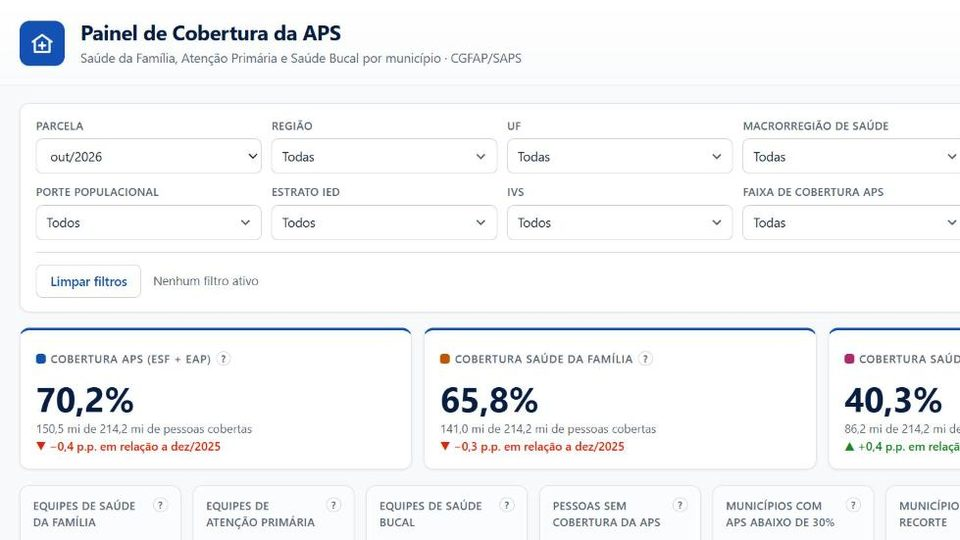
Cobertura da APS
InternoCobertura da Estratégia Saúde da Família e da Saúde Bucal.
Infraestrutura
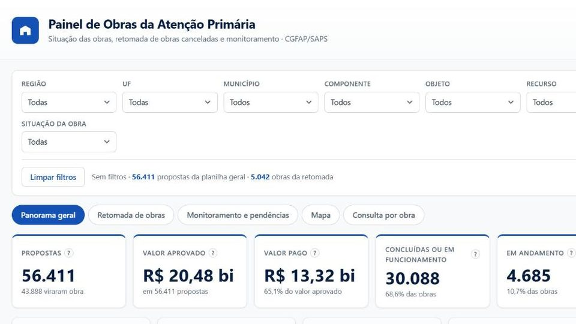
Painel de Obras da Atenção Primária
InternoAcompanhamento das obras de unidades da Atenção Primária.
Sistemas e Links Úteis
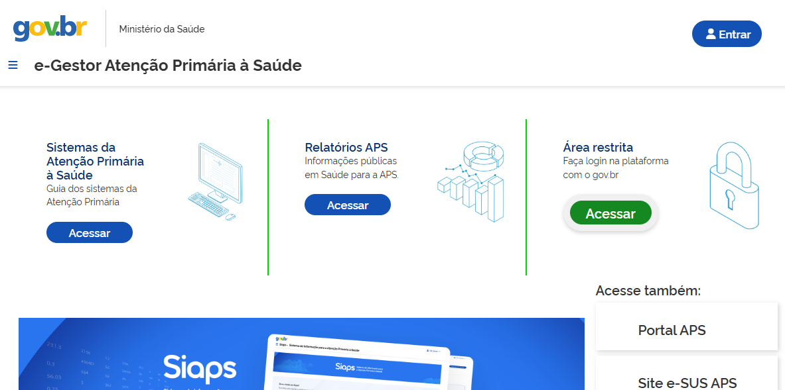
e-Gestor APS
PúblicoSistema oficial de gestão da Atenção Primária à Saúde do Ministério da Saúde.
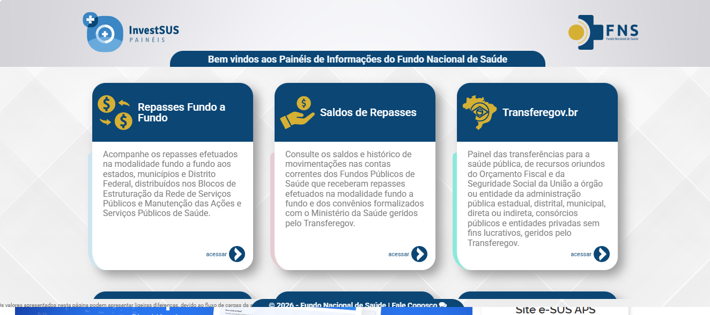
InvestSUS Painéis
PúblicoEvolução mais recente dos municípios nos últimos 12 meses, com dados sobre equipes, cobertura, suspensões e financiamento da APS.
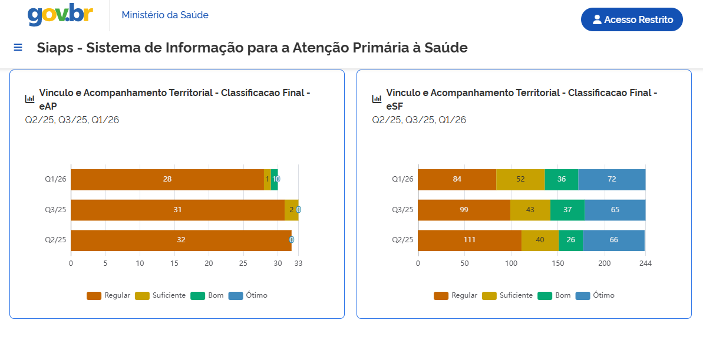
SIAPS
PúblicoO SIAPS (Sistema de Informação para a Atenção Primária à Saúde) é a plataforma oficial do Ministério da Saúde para monitoramento e gestão da Atenção Primária no SUS.
Eventos
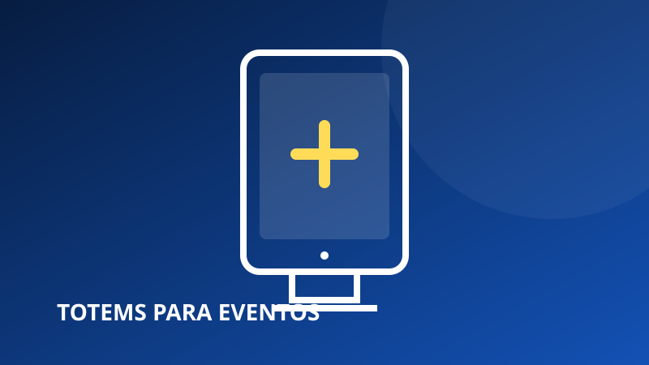
Totem para eventos
InternoAcesse o Jogo do Combo de Equipamentos para UBS e o Totem Caminhos da Equidade. Visualize online ou baixe para usar sem internet nos eventos.
Publicações
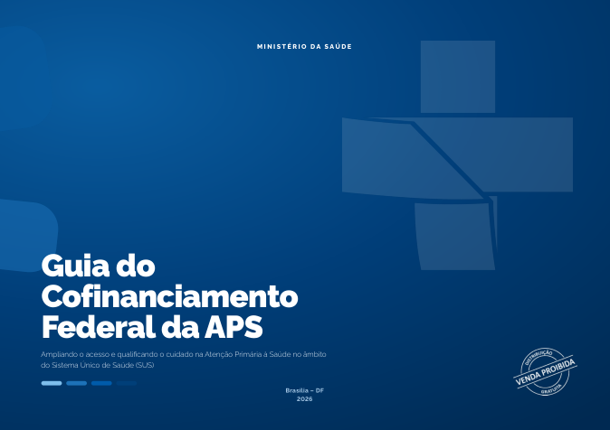
Guia do Cofinanciamento Federal da APS
PDFAmpliando o acesso e qualificando o cuidado na Atenção Primária à Saúde no âmbito do Sistema Único de Saúde (SUS). Ministério da Saúde, 2026.
Nenhum conteúdo encontrado para esta busca.